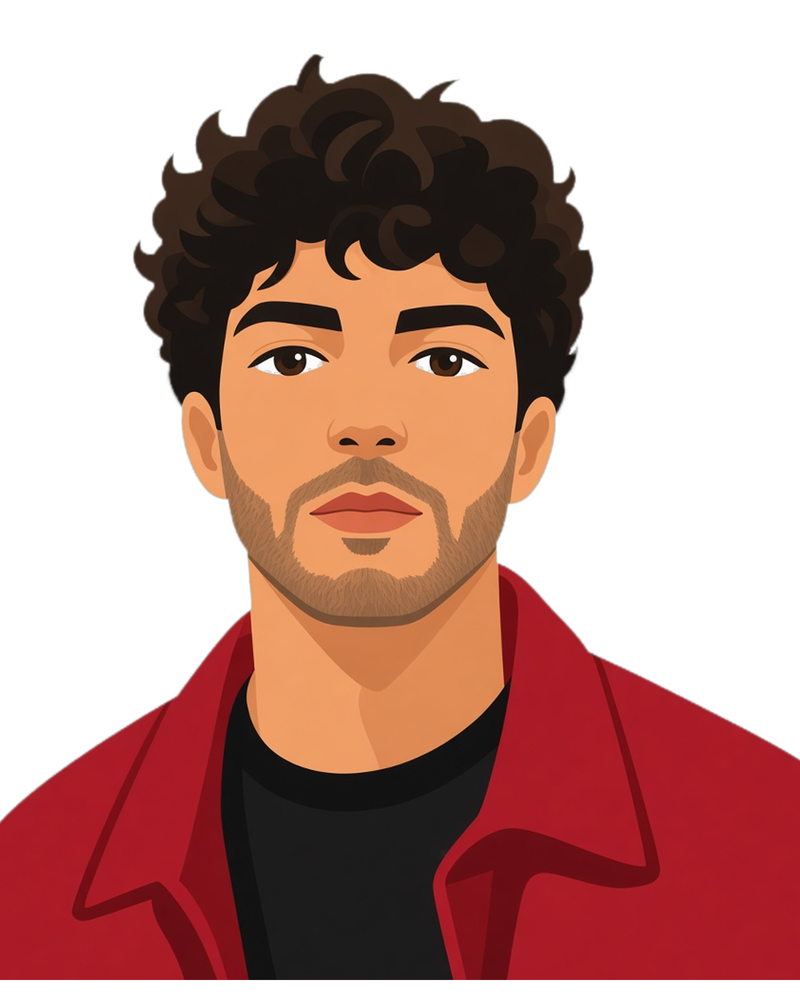

01
Live Listening
Transcribes from the mic while you listen.
Selected work
MSc student in AI for Business Transformation. I build AI-enabled software, starting with Lyceum, a native macOS app.

Studies
MSc, AI for Business Transformation H-FARM College · 90 ECTSLooking towards
Forward Deployed Engineering And AI / software internships.Based in
Italy Working in Italian and English.Selected work
Two things I have built.
Flagship · Personal project
Lecture and meeting audio in, editable study documents out. January 2026–present, sole author.

01
Transcribes from the mic while you listen.
02
Import a recording; Whisper runs on this Mac.
03
Transcript + slides → a Master Note in Word.
Personal project
Lectures and meetings into study documents. Sole author since January 2026; I designed and tested it, built with AI help.
Hackathon · 10 October 2026
A myAudi loyalty prototype for H-ACK Audi: five levels, four rings. Code generated in full by AI from my prompt.
Contact
Open to Forward Deployed Engineering and AI / software internships.